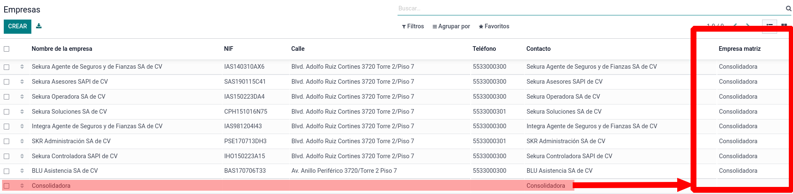
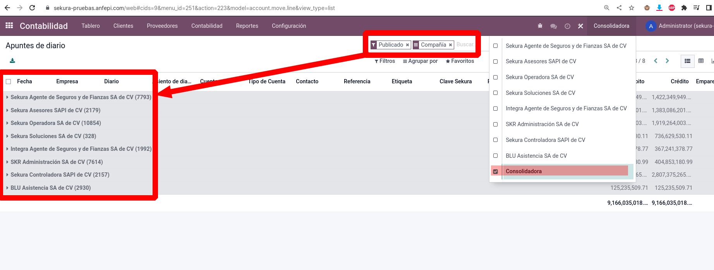

Extiende el uso de child_of como funcionaba en versiones anteriores pero sin tener que definirla en la regla.
Toda regla que contenga la expresion company_ids se reevalua para buscar las empresas hijas, el dominio de la regla debe tener de de forma obligatoria dentro de la expresión:
('company_id', 'in', company_ids)
Compañia
Tenemos una vista jerarquica:

Prueba
Solo seleccionando la compañia consolidadora podemos ver los registros de sus compañias hijas:

Contacto para Soporte, Desarrollo o Implementaciones.
Cuentas con un soporte de 45 dias al adquirir este modulo.